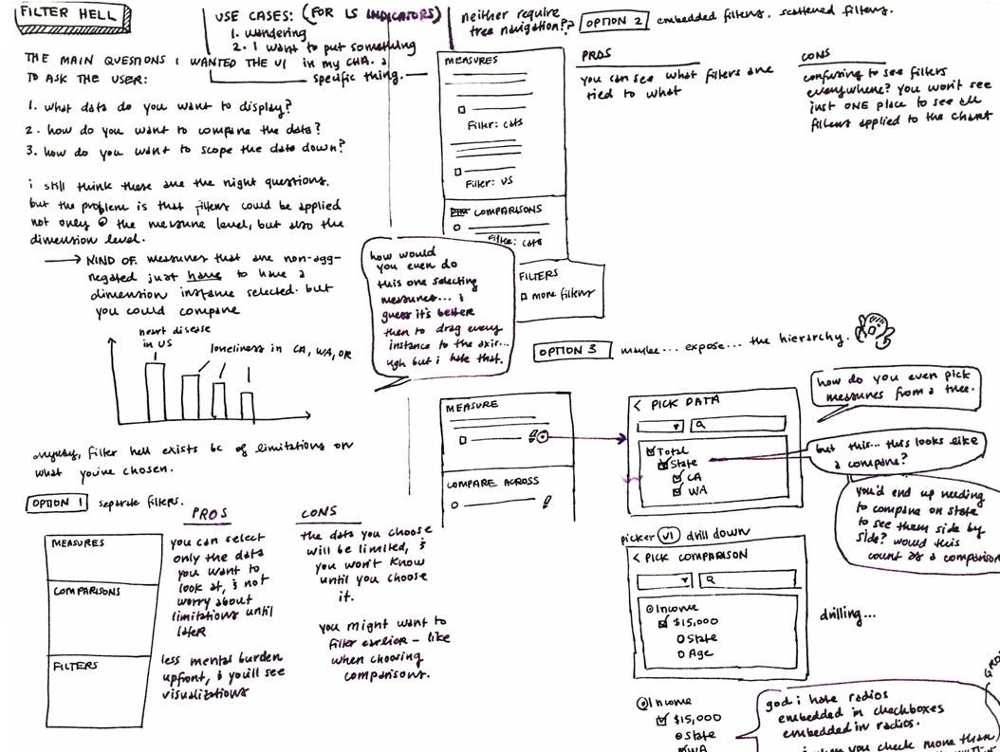

Overview
Public health organizations compile huge amounts of data and present that data both to their constituents, and to the government as part of mandated assessments. The aim is to make “data about how we live, work, and play” more accessible, especially to those who are not “data experts.”
As the company's sole designer, I owned UX design, UX research, and UI design. Specifically, I:
- developed sketches to meet product requirements,
- owned user research, creating low-fidelity prototypes and facilitating tests with active customers,
- created high-fidelity mockups and detailed technical requirements for direct handoff to 3 developments teams (2 local, 1 remote), and
- supported all engineering teams through sprint cycles, providing detail for unforeseen edge cases, and adjusting design when necessary to ensure sprint goals were met.
I redesigned the UX/UI of entire product, including overhauling the UX/UI for its website and core data visualization tools.
As part of the redesign, I also selected new colors for our logo and worked with our marketing team to develop a new identity for LiveStories. The colors were chosen for how they would stand out against other identities at public health conferences.

A banner from the LiveStories branding redesign
I incorporated colors into the design system for our product, which also included guidelines for typography, voice, and accessibility to meet customer requirements.

Design system
I also made clear stickers for our hack-a-thon!

Stickers for participants and winners
Project: Chart Editor
The product's main challenge was: how do you make complicated health data easy to browse and understand? Most LiveStories users are data experts, and wanted to share their analyses through compelling methods like online interactive charts. But, they were unfamiliar with coding, and needed a way to make charts without taking away time from their other responsibilities.
Knowledge about data science also varied between users. A concept that one user calls an “indicator” is known to another as a “dimension,” and both of these things are concepts not generally well-known to constituents who were the target audience of visualizations.
Other requirements of this design included:
- Allow users to make a vast variety of huge selections, including: selecting all states, all counties in a state, all cities in a county, a state and states with similar demographics...
- Build in the groundwork for future “smart” charting with the aid of data analysis
Process
I started all concepts from sketches.
A sketch for how filtering charts should work
Once I had a general idea for a feature, and feedback from the VP of Product and development teams on what parts seemed most challenging to understand and develop, I began research. Due to limitations with time and resources, my process for validating new features was centered on user testing with our existing customer base, using low-fidelity click-through prototypes and live builds. Because our customers are located throughout the nation, I interacted with all customers remotely.

A screenshot of a low-fidelity prototype
High-fidelity Mockups
The final design for the chart editor:
- consolidated chart controls in one place (compared to an initial design that contained controls all around the chart),
- addressed complicated technical and business requirements regarding how users should be allowed to filter data, and
- fulfilled various accessibility requirements, which is important for customers that work in government.

Example interaction flow for the chart editor
Because LiveStories aimed to normalize the vast variety of public health data into a single data model, there was also the challenge of giving users a way to search for data sets. Users had to be able to find sets with data for the proper times and locations, as well as data sets that fit specific and vast requirements. Users might only want data sets that have data for “California,” or data sets that excluded certain counties, or data sets that only represented data in “percent of people” rather than “percent of households,” and so on.

A screenshot of a high-fidelity mockup
I attached all interactions to metrics, and brought designs back to users to be evaluated. The updates were viewed by users as simpler, cleaner, and more straightforward compared to both existing designs and their current charting tools. The design was viewed as extremely successful in the context when organizations “just needed a chart,” and didn't want to wade and perform surgery to cut and connect spreadsheets of number data just to present simple numbers to the public.